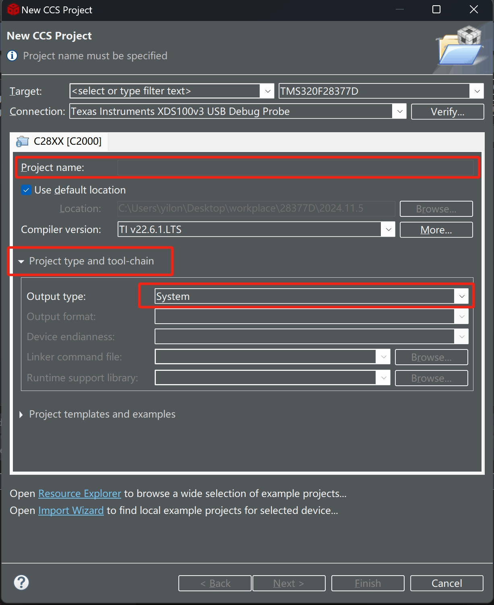
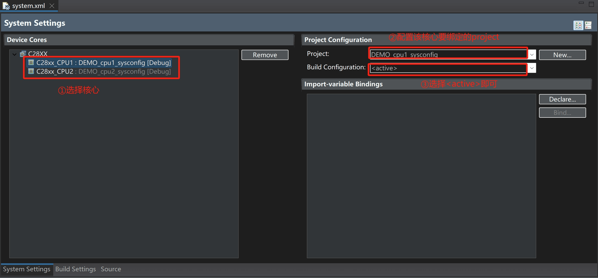

TI_DSP_C2000_driverlib与Sysconfig
driverlib
简述
driverLib是德州仪器为C2000微控制器提供的一个驱动库，它包含了大量的硬件抽象层（HAL）函数，用于简化微控制器的编程过程。
driverlib 库的代码组织通常遵循模块化设计，每个模块对应一个微控制器外设或功能模块。
每个模块都提供初始化函数、配置函数以及操作函数。开发者只需调用这些函数即可完成外设的配置和操作，避免手动处理低级别的寄存器操作。
由于 driverlib 提供了对硬件寄存器的抽象层，代码在不同的 C2000 器件之间的移植变得更容易。
TI通常将项目架构称为
基于bit-filed的或基于driverlib的，
前者即所谓的“操作寄存器”式设计，是C2000Ware/device_support中的例程形式。
driverlib包含在
C2000 Ware中，要使用此库，必须安装C2000 Ware。
driverlib的文件结构
默认位置安装C2000 Ware后，
driverlib的相关文件存放于C:\ti\c2000\<C2000Ware_VERSION>\driverlib\<chip_name>\driverlib
该文件夹下的结构为：
- driverlib
- ccs
- driverlib_coff.lib（指定COFF时使用）
- driverlib_eabi.lib（指定EABI时使用）
- driverlib.lib（兼容上述两种格式）
- inc
- lib的底层驱动必要的头文件，应全部加入到项目中
- .c/.h文件
- .c文件：driverlib的源文件，当不使用lib文件时，项目用这些源文件进行编译，否则没必要添加到项目中
- .h文件：driverlib模块调用函数的头文件，应全部加入到项目中
- ccs
关于COFF与EABI:
| 特性 | COFF | EABI |
|---|---|---|
| 文件格式 | COFF（二进制目标文件格式） | ELF（基于嵌入式应用的ABI） |
| 历史 | 起源于Unix系统，较为老旧，曾被广泛使用 | 新型标准，针对嵌入式系统优化 |
| 性能优化 | 较少的优化支持 | 高度优化，支持寄存器分配和链接时优化等 |
| 移植性 | 依赖平台，跨平台移植较困难 | 高度可移植，适用于多种架构 |
| 支持的处理器架构 | 主要用于早期的DSP处理器 | 支持ARM、DSP等多个处理器架构 |
| 调试信息 | 支持简单的调试信息 | 更强的调试支持和优化分析 |
| 适用的开发场景 | 小型嵌入式应用或老旧项目 | 高性能嵌入式系统和现代处理器应用 |
创建基于driverlib的project
- 在CCS中新建空白工程（推荐指定为EABI格式）。
创建项目后，有可能会在工程内自动添加
.cmd文件，此时应将其删除，
在下文中会手动将需要的cmd文件添加到工程中。
- 在项目中创建如下文件结构：
- project_name
CMD- 放置C:\ti\c2000\<C2000Ware_VERSION>\device_support\<chip_name>\common\cmd\xxxx_RAM_lnk.cmd，当将程序烧写进RAM时使用这个，另一个右键选择"Exclude from build"
- 放置C:\ti\c2000\<C2000Ware_VERSION>\device_support\<chip_name>\common\cmd\xxxx_flash_lnk.cmd，当将程序烧写进flash时使用这个，另一个右键选择"Exclude from build"
device- 放置C:\ti\c2000\<C2000Ware_VERSION>\device_support\<chip_name>\common\include中的
device.h - 放置C:\ti\c2000\<C2000Ware_VERSION>\device_support\<chip_name>\common\source的
device.c文件
- 放置C:\ti\c2000\<C2000Ware_VERSION>\device_support\<chip_name>\common\include中的
libdriverlib- 放置C:\ti\c2000\<C2000Ware_VERSION>\…\driverlib所有.h文件
- 放置
driverlib_eabi.lib或driverlib_coff.lib或driverlib.lib（根据项目格式） inc：放置C:\ti\c2000\<C2000Ware_VERSION>\…\driverlib\inc所有.h文件ccs：放置C:\ti\c2000\<C2000Ware_VERSION>\…\driverlib\ccs所有文件- Debug
- driverlib_coff.lib（Debug版本，指定COFF时使用）
- driverlib_eabi.lib（Debug版本，指定EABI时使用）
- Release
- driverlib_coff.lib（Release版本，指定COFF时使用）
- driverlib_eabi.lib（Release版本，指定EABI时使用）
- Debug
inc- 放置C:\ti\c2000\<C2000Ware_VERSION>\device_support\<chip_name>\common\include中的
driverlib.h - 放置自定义的头文件
- 放置C:\ti\c2000\<C2000Ware_VERSION>\device_support\<chip_name>\common\include中的
src- 放置C:\ti\c2000\<C2000Ware_VERSION>\device_support\<chip_name>\common\source的
xxxx_CodeStartBranch.asm - 放置自定义的源文件
- 放置C:\ti\c2000\<C2000Ware_VERSION>\device_support\<chip_name>\common\source的
- 右键点击项目名称->Properties->C2000 compiler->Include Options->Add dir to #include search path添加如下几个路径：
- ${PROJECT_ROOT}/device - ${PROJECT_ROOT}/lib - ${PROJECT_ROOT}/lib/driverlib - ${PROJECT_ROOT}/lib/driverlib/inc - ${PROJECT_ROOT}/include - ${CG_TOOL_ROOT}/include
- 右键点击项目名称->Properties->Build->General->Project type and tool-chain->Linker command file，选择
<none>。
对于多核处理器，还需要在右键点击项目名称->Properties->C2000 compiler->Predefined Symbols->Pre-define NAME增加
CPU1或CPU2的宏名，以指定属于哪个核的项目。
因为前面已经手动将cmd文件加入编译环节中，此处不再进行重复指定。
debug版本和release版本是单独进行设置的。
- main函数的基本格式配置：
1 |
|
Sysconfig
简述
SysConfig 工具是一种图形化的配置工具，旨在简化 TI 嵌入式系统开发中的外设和软件堆栈配置过程。SysConfig 工具支持各种 TI 嵌入式处理器，如 MSP430、C2000、SimpleLink MCU、Sitara 处理器和其他设备。
通过 SysConfig，开发人员可以以更直观的方式配置硬件外设、引脚分配和软件组件，而无需手动编写复杂的配置代码。

-
引脚分配和复用管理：
SysConfig 帮助用户简化和自动化引脚的分配。TI 的器件通常具有多功能引脚 (多路复用)，SysConfig 工具允许开发者为每个外设模块选择合适的引脚，同时避免引脚冲突。工具会自动提示并优化这些选择。 -
中断和外设管理：
对于复杂的嵌入式应用，SysConfig 提供了一种方便的方法来配置外设、中断优先级和定时器等系统资源。用户可以通过图形界面来设置外设的操作模式、时钟源、中断设置等参数。 -
代码生成：
一旦用户完成配置，可令SysConfig 工具自动生成相应的 C 或 C++ 代码，这些代码可以直接用于项目中。这些生成的代码包括所有必要的外设初始化、引脚设置和中断配置等，大幅减少了手动编写和调试的时间。 -
支持多种外设和协议：
SysConfig 不仅支持基本的外设配置（如 GPIO、UART、SPI、I2C 等），还支持高级协议栈的配置，如 BLE (Bluetooth Low Energy)、Zigbee、Wi-Fi、EtherCAT 等。
对于C2000器件sysconfig工具的使用,必须安装C2000 Ware。
要注意，不是所有C2000 器件都支持sysconfig。
基本使用流程
Sysconfig是基于driverlib的，
因此基于上一节创建的项目进行设置。
-
在项目中新建一个后缀为
.syscfg的文件。 -
创建成功后，会提示是否启用sysconfig配置，确认启用即可。
-
右键点击项目名称->Properties->Bulid->SysConfig->Basic Options -> Root system config meta data file in a product or SDK，
新增一个路径：C:\ti\c2000\<C2000Ware_VERSION>\.metadata\sdk.json；
同时在本页面的Name of the Device as defined in the core SOC data输入本项目的设备名称，可输入名称如下： (大小写严格对应)
（截止C2000Ware_5_01_00_00）- F28004x
- F2837xD
- F2837xS
- F2807x
- F2838x
- F28002x
- F28003x
- F280013x
- F280015x
- F28P65x
-
CCS中双击打开
syscfg文件，会自动加载Sysconfig工具。
先进行如下配置：

-
根据需要对模块进行新建与配置，这里以GPIO为例：

在配置过程中，可以预览sysconfig生成的文件：

-
在配置好相关外设后，
Ctrl+s保存syscfg文件即可，等到编译时，会在编译文件夹（默认为Debug或Release）的syscfg文件夹中生成相关文件。
第一次编译时有可能会自动引入官方例程的cmd文件，导致冲突，将此删除即可。
- 在主函数中引入相关头文件，并调用初始化函数即可：

Board_init()会将所有在sysconfig配置的模块都初始化。
在Board.c中起始对每个模块的单独初始化也作了定义，可以根据需要使用。
通过Sysconfig配置系统基本属性
当使用controlsuite例程提供的Device.c与Device.h时，
将无法通过Sysconfig配置系统基本属性。（比如时钟、外设使能、低功耗模式等）
为了通过Sysconfig配置芯片基本属性：
-
删除project中的Device.c与Device.h文件，project属性中配置的对应路径也删除。
-
打开
.Syscfg文件，找到SOFTWARE->Device Support：

-
保存配置好的
.syscfg文件，编译project。
如果报错，很可能是 project属性->头文件路径 配置不对。
project的构建尽量按照前文进行。
如此配置完成后，可以通过Sysconfig的
clock tree工具对系统时钟进行配置。
关于中断
一些外设有对应的中断，在Sysconfig对应页面中可进行配置并注册中断函数：

在INTERRUPT模块中可对所有在Sysconfig配置的中断进行管理
（不在Sysconfig配置的中断无法进行统一管理）
在Sysconfig配置完中断后，在主函数中要声明与定义对应中断服务函数，
注意中断服务函数名字要和在Sysconfig中注册的相同。

要注意，自动生成的Board.c与Board.h是只读的，即使自行修改，在重新编译后其相关内容也会置为与.syscfg一致的情况。
因此要修改相关内容，在.syscfg中修改即可。
使用Sysconfig自动生成的CMD文件
在Sysconfig中可以图形化配置CMD文件。
要实现这个目的，按如下进行配置：

接着把原工程中使用的cmd文件删除或右键Exclude。
完成上述步骤后编译工程，此时本工程使用的就是Sysconfig自动生成的cmd文件。
一般地，工程分为Debug版本和Release版本，分别对应RAM中运行和FLASH中运行。
因此可创建两个CMD模块： RAMRUN与FLASHRUN：
当切换到对应程序版本时，启用对应的CMD模块。

启用对应的CMD模块时，会预定义一个对应名字的宏，
比如启用CPU1_FLASHRUN时，会定义宏CPU1_FLASHRUN。
这个宏可用于协助程序中判断此时处于那种版本。
工程相关配置与注意事项
28377D在Sysconfig时钟树默认外部晶振是10MHz，但大多数应用案例用的是20MHz，注意手动配置。
CPU2的project配置
对于多核设备，每个CPU会有一个project。
对于28377D，
在配置 CPU2 project的syscfg时，
在芯片选型配置中切换为CPU2：

配置后会发现可配置内容少了很多，且无法配置时钟树，
这是因为只有CPU1才能配置时钟与GPIO。
注意此时仍保留
LED的配置模块，其本质上是配置GPIO，在CPU2 project中即使配置也是无效的。
记得将project配置中预定义的宏改为
CPU2.
在CPU2的project中，
虽然仍然可以使用syscfg自动生成的Device.c和device.h，
甚至还会生成clocktree.h，但其中是空的，
因此device.h中与时钟相关的内容（包括Delay函数）都不能使用。
除了以上注意点外，main函数的初始化设置是相同的。
多核烧写
当第一次新建工程完成后，进行烧写程序时会生成默认的配置文件，
默认配置文件会将project的.out文件烧进所有核中，这样陷入不符合需求，
因此需要进行手动配置。
点击上方工具栏的Debug按钮（小虫子）旁的下箭头，选择Debug Configurations...，弹出配置窗口：

此时便可以自动将其余核心的程序分别烧写进对应的核心中。
如果更改了其余project的程序最好先编译一次。
不能保证烧写程序前会将所有project重新编译一次。
系统project
为了方便，可以创建一个system project，
用以连接各个子核心的project。

打开新建项目页面，在project type and tool-chain子项中选择Output type为System，
为project命名好后点击Finish。
项目新建完成后会自动弹出system.xml的配置页面，也可手动打开：

配置完成后，在该项目中进行debug或烧写程序时便自动将对应project的程序烧写进去。
同时，打开任一project的syscfg时发现其融合为一个页面，方便快速调整。
多核启动引导
当处于Debug界面时，CCS会自动引导各核心的程序，
此时不需要其余配置。
但正常情况下(standalone模式)，当芯片上电后，其余核心的程序是由CPU1来引导的。
因此，在CPU1中，需要在Device_init()加上以下内容：
1 |
|
要注意的是，进行Debug时，应把上述代码注释掉，
因为CCS已经进行了引导，
CPU1不会再收到其余核心的引导成功返回值，
此时CPU1会陷入死循环一直等待。
Debug与Release版本切换
不同版本的project配置是完全独立的，
包括源文件的Exclude、project配置中的宏、头文件路径、Sysconfig的sdk路径。
因此第一次切换版本时需要重新配置一次。
但syscfg的配置是不变的，
因此每次切换都需要将CMD模块切换为对应的模块，
Device Support的Driverlib Build版本也要切换。